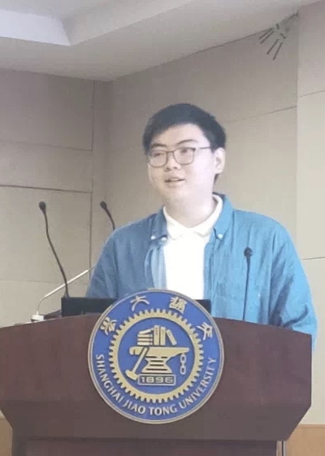
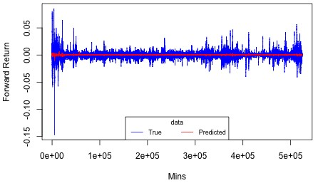

|  | Junior, |
I am currently a Junior student in University of Michigan - Ann Arbor.
I was admitted to UM-SJTU Joint Institute,
Shanghai Jiao Tong University in 2018,
and transferred to College of Engineering,
University of Michigan in 2020.
Bachelor of Science in Engineering | May 2022 (expected) | University of Michigan
Major: Data Science
Cumulative GPA: 3.92/4.00.
Bachelor of Science | August 2022 (expected) | Shanghai Jiao Tong University
Major: Electrical and Computer Engineering
Cumulative GPA: 3.53/4.00.
C/C++, R, SQL, MATLAB
Compressed Sensing and Deep Learning in Dynamic Magnetic Resonance Imaging
UM-SJTU Joint Institute, Shanghai Jiao Tong University, November 2020 - April 2021
Advisor: Professor Heng Qiao
Duties: keep up-to-date with research on CS-MRI reconstruction; implement and simulate several CS-MRI reconstruction algorithms.
|  | Statistical Analysis of Crypto Currency Price Series
|